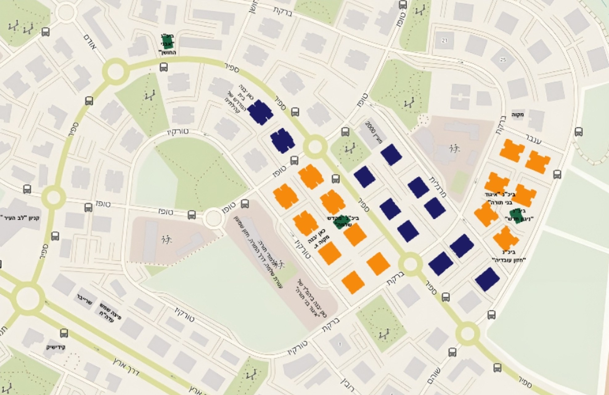

◆
הקהילה שלנו
הצצה לחיי קהילת אבני חן — בית הכנסת, השיעורים, והפעילות למשפחות ולילדים.
לבירורים על הקהילההצצה לחיי קהילת אבני חן — בית הכנסת, השיעורים, והפעילות למשפחות ולילדים.
לבירורים על הקהילהקהילת בני הישיבות אבני חן היא קהילה ישיבתית ואיכותית שהוקמה לפני יותר מ-5 שנים, ובשנתיים האחרונות תופסת תאוצה — כשעוד ועוד משפחות קונות דירות באזור הקהילה.
הקהילה מונה כיום כ-40 משפחות מבני הציבור הליטאי, עם בוגרים ממגוון הישיבות הליטאיות — כגון חברון, קול תורה, תפרח, קובנה, גרודנא באר יעקב, פוניבז', נוייברט, וולפסון ונחלת הלווים, ועוד ועוד. זוהי קהילה צעירה ותוססת, עם ממוצע גילאים שבין 23 ל-37.
הקהילה מתבססת באזור העליון של שכונת אבני חן (מודגש במפה), כשבאזור הקהילה יש כמות גבוהה של ציבור חרדי מבני עדות המזרח, שמהווים מעטפת לחיי הקהילה שלנו.
הקהילה מתאפיינת בייחודיות נדירה: מחד, נהנים בני הקהילה ממעטפת מושלמת הכוללת את כל הצרכים של משפחה חרדית; ומאידך, החיים בה נוחים ורגועים ונעדרים ממגרעות המגורים בערים הגדולות שבמרכז.

הנוכחות החרדית בשכונה לחצו על המפה להגדלה
גם בבניינים שאינם מסומנים מתגוררים חרדים רבים — רק עדיין לא באחוזים משמעותיים.
מעבר לבית ולשכנים, הקהילה מעמידה לרשות המשפחות מסגרת שלמה — לכל אחד מבני הבית.
סיפורו של בן המקום
הקדמה קצרה: איש פשוט אני, לא ברחתי מהשבי ולא קפצתי ממסוק, וגלישת גלים זה ממש לא התחום עבורי. גדלתי בבני ברק, המשכתי לישיבה חשובה במרכז הארץ, ולאחר נישואי עברתי להתגורר בירושלים ולמדתי בכוללים שם. בשלב מסויים הבנתי שלא תהיה באפשרותי לרכוש דירה באחת מערי הקודש החרדיות, ופניתי לחפש קורת גג שתהיה בהישג ידי. שכונת אבני חן בחריש התאימה עבורי מכל הבחינות — והשאר היסטוריה.
אז מה מצאתי כאן? מצאתי אנשים שלווים ושמחים, מצאתי תורה וגדולה במקום אחד ובזול. שילוב נדיר שכמעט ולא קיים בשום מקום אחר בארץ. ראשית, אין מי שמבקר במקום ולא נשבה ביופי המקום, המרחבים, כרי הדשא, הבניינים המרווחים והמטופחים, ועוד ועוד — דברים שקשה למצוא גם בערים השייכות למגזר הכללי, קל וחומר בציבור החרדי. ומאידך, את האוירה התורנית במקום קשה לפספס: קול התורה הבוקע מהכוללים הרבים הפזורים בשכונה, קול התפילות מבתי הכנסת השונים, ומעל הכל אוירת השבת — אותו שקט עילאי שמלווה את כולנו בשבת קודש, השלווה, הכבישים הריקים ממכוניות, הרחובות המלאים במתפללים ששבים מבית הכנסת. חריש של מעלה.
מבחינה תורנית, יש בשכונה את בית הכנסת של הקהילה הליטאית שפעיל כעת בשבתות, ובימי חול מתקיימים בו שיעורים כסדרן, וכן מתקיימות בו תפילות בימות החול של בין הזמנים; בעוד מספר חודשים, משיעבור למשכן הקבע, יחל להתפלל בו גם בימי חול. בנוסף, בשכונה מספר בתי כנסת של עדות המזרח, ביניהם בית הכנסת 'מקדש שלמה' מבתי הכנסת הפעילים בעיר, ובו שטיבל' עם מניינים בחלק ניכר משעות היום. כמו כן, כמה ממוסדות החינוך המרכזיים בעיר ממוקמים בשכונה, דוגמת ת"ת 'עטרת שלמה' ומוסדות נוספים.
גם מבחינה פרקטית לא חסר לי דבר. אם בעבר לכל דבר קטן נאלצנו לנסוע למרכז, היום חריש הפכה למרכז קטן בעצמה, ובאבני חן בפרט יש כמעט הכל: מחנויות תשמישי קדושה וחנויות בגדי ילדים חרדיות, עובר דרך סופרמרקטים בכשרויות מהודרות, מכירות שכונתיות, גמ"חים ועוד ועוד. בשכונה ניתן למצוא במרחק הליכה קצר סופרמרקט גדול — סופר מהדרין, שלוש קופות חולים, ובתי מרקחת שונים.
גם התחבורה בעיר השתפרה לאין ערוך. זכורני את הימים הראשונים שלי בחריש, את אותה נסיעה מתישה באוטובוסים ורכבות שלקחה קרוב לחמש שעות, את אותה הפעם שחזרתי מבני ברק בשעת לילה מאוחרת ופספסתי את אוטובוס ההמשך בנתניה — מה שהוביל להתגלגלות של כמה שעות בטרמפים בחורים נידחים. כיום, בסיעתא דשמיא, אחרי עבודה מאומצת של העסקנים הנמרצים בעיר, יש אוטובוס ישיר לירושלים ואפילו אוטובוס לבני ברק. (כאן המקום להזכיר את אותו ראש עיר שנלחם בעור שיניו שלא יעבור בעיר אוטובוס שמתנוסס עליו השלט המרשיע 'בני ברק' — איפה הוא, ואיפה הציבור החרדי בעיר נמצא כיום.)
על המחירים לא נראה לי שיש צורך להרחיב, על כל פנים לא בבמה זו. המספרים — 1.3 מיליון לדירת ארבעה חדרים — מדברים בעד עצמם. די אם אציין שלא קיים מקום אחד בארץ, בטווח המרחק הזה של פחות משעה נסיעה מבני ברק ושעה וקצת לירושלים, שעומד בסביבת המחירים הזו. ואפילו אם נוסיף עוד שעה ויותר לנסיעה — לא נגיע למחירים הללו.
אסכם בפשטות: חריש בתנופה, תנופה גדולה. כל מי שמכיר את העיר מבפנים חש וחווה את זה. זה הזמן לקפוץ על הרכבת ולהצטרף להצלחה. אל תאמר מחר — מחר זה בוודאות מאוחר.
שלכם, יעקב


נשמח לספר עוד, לחבר אתכם למשפחות בקהילה ולעדכן על דירות פנויות